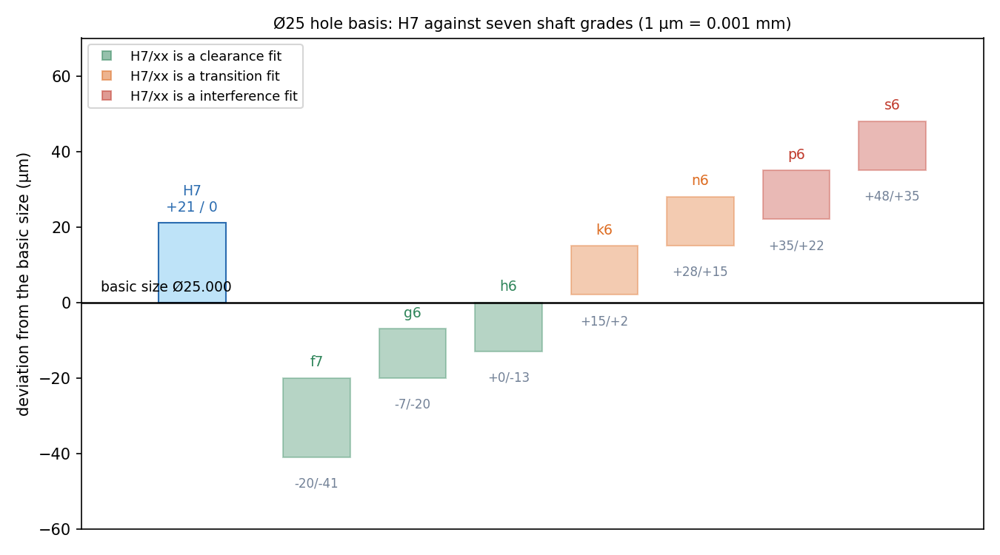

Limits, Fits and Tolerances
No part can be made to an exact size, and none needs to be. A tolerance states how much the size may vary. A fit states how a shaft sits in a hole: loosely (clearance), tightly (interference) or in between. The ISO system describes both with a letter and a number (H7, g6) built from two independent ideas: the tolerance grade (how big the zone is) and the fundamental deviation (where it sits relative to the basic size).
Part of Computer Aided Machine Drawing - MOC. Previous: Keys, Rivets and Welds. Next: Surface Finish, Machining Symbols and Production Drawings. Geometric tolerances: Metrology and GD&T - Form, Position and Gauging.
1. Terms
| Term | Meaning |
|---|---|
| Basic size | the nominal size shared by hole and shaft |
| Limits | the maximum and minimum permitted sizes |
| Tolerance | upper limit minus lower limit |
| Deviation | limit minus basic size (upper and lower; sign matters) |
| Fundamental deviation | the deviation nearer to the zero line: it fixes the zone's position |
| Allowance | the intended difference between mating sizes (minimum clearance, or maximum interference) |
| Clearance | hole minus shaft, positive |
| Interference | shaft minus hole, positive |
2. The ISO system
Tolerance grade IT01…IT18: IT5–IT7 for precision fits (grinding, reaming), IT7–IT9 for general machined fits, IT11 and above for non-critical sizes. For diameters in a range with geometric mean (mm), the standard tolerance unit is
For 18–30 mm, mm, m: IT6 = 13, IT7 = 21, IT8 = 33, IT9 = 52 µm. (The ISO tables give the same values at this size; they differ by 1 µm from the formula in the smallest ranges: IT7 is 15 µm at 6–10 mm and 18 µm at 10–18 mm.) For 50–80 mm, IT7 = 30 µm; 80–120 mm, IT7 = 35 µm: the tolerance grows with the size.
Fundamental deviation is a letter: capital for holes (A…Z), lower case for shafts (a…z).
- H (hole): lower deviation = 0, so the hole is the basic size or larger.
- h (shaft): upper deviation = 0, the shaft is the basic size or smaller.
- a…g shafts are smaller than basic (clearance fits with an H hole); j, js, k, m, n are transition; p…z are larger (interference).
For shafts, representative fundamental deviations are , , , (µm), (for IT4–IT7), .
A designation is letter + grade: Ø25 H7 (hole, limits µm), Ø25 g6 (shaft). A fit is written H7/g6, hole first.
3. Hole-basis and shaft-basis systems
- Hole basis (preferred): the hole is always H; the shaft letter selects the fit. The hole is the harder dimension to produce (drilled, reamed with standard tools), so keeping it constant reduces tooling.
- Shaft basis: the shaft is always h; the hole letter changes. Used when one long shaft carries several parts with different fits (line shafting, drawn bright bar).
4. Worked example: Ø25 with a H7 hole (21 µm tolerance)
Computed from the formulas above, with the standard values for the interference grades:
| Fit | Hole | Shaft limits (µm) | Clearance (min to max) | Type | Use |
|---|---|---|---|---|---|
| H7/f7 | +21/0 | −41/−20 | 20 to 62 | clearance | running fit, bearings |
| H7/g6 | +21/0 | −20/−7 | 7 to 41 | clearance | sliding, close running |
| H7/h6 | +21/0 | −13/0 | 0 to 34 | clearance | locating, slides when oiled |
| H7/k6 | +21/0 | +15/+2 | −15 to +19 | transition | location, hammer assembly |
| H7/n6 | +21/0 | +28/+15 | −28 to +6 | transition | tight location, press |
| H7/p6 | +21/0 | +35/+22 | −35 to −1 | interference | light press, permanent |
| H7/s6 | +21/0 | +48/+35 | −48 to −14 | interference | medium drive, shrink fit |

A negative "clearance" is an interference. The H7 zone sits on the zero line; the shaft zones step up from f to s: clearance fits (green) lie below, interference fits (red) above. For a transition fit the actual parts may show either clearance or interference.
Calculating a fit: minimum clearance = smallest hole − largest shaft; maximum clearance = largest hole − smallest shaft. H7/g6: µm and µm.
5. Choosing and specifying
- Function: free rotation (clearance), accurate location without relative motion (transition), no relative motion at all (interference, no key needed up to a torque).
- Process capability: IT6 shaft with IT7 hole is a common precision pair (grinding with reaming); IT8–IT9 for ordinary turned parts.
- Cost rises steeply with tighter grades: roughly doubling per two grades.
- On drawings show either the tolerance zone symbol (Ø25 H7), the limit deviations (Ø25 +0.021/0), or both; for an assembly show the fit (Ø25 H7/g6). General tolerances (ISO 2768) cover dimensions without an individual tolerance.
- Reading 7 in H7 as 0.007 mm: the grade number gives a multiple of that depends on the size (21 µm here).
- Mixing up which letter is the hole and which the shaft: capital for holes.
- Applying H7/g6 at another size with the same deviations: the values change with the size range.
- Calling a transition fit a clearance fit because the nominal sizes would clear.
- Specifying an IT5 tolerance where IT9 will do: a large, avoidable cost.
Predict first: Ø25 H7/g6. Can this shaft always be pushed into the hole by hand?
Yes, and it always rattles a little: the minimum clearance is 7 µm, so even the worst-case pair fits; the maximum clearance is 41 µm. It is a sliding fit.
Why does H7/p6 still fit with only 1 µm minimum interference but 35 µm maximum?
The spread of interference equals the sum of the two tolerances (21 + 13 = 34 µm). The minimum interference is what the design relies on to hold; the maximum is what the assembly force, hoop stress and press must tolerate.
6. Connections
- Metrology and GD&T - Form, Position and Gauging — gauging a hole with GO and NO-GO plugs to its limits, plus form and position tolerances.
- Surface Finish, Machining Symbols and Production Drawings — the finish a given grade needs (IT6 needs Ra ≈ 0.8 µm or better).
- Shaft Design - Static and Fatigue Loading and Bearings - Rolling Selection and Sliding Lubrication — shaft seats for bearings and gears.
- Thermal Stresses — shrink fits use thermal expansion to assemble an interference fit.
- Error Analysis - Uncertainty and Propagation — tolerance stack-up of an assembly is a worst-case or RSS combination of individual tolerances.